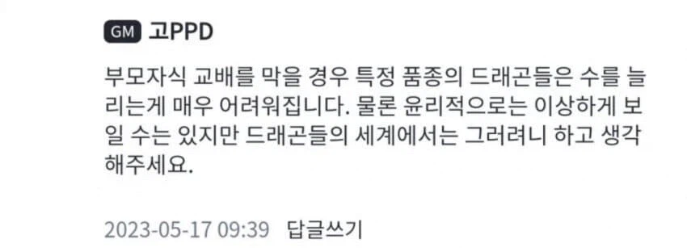

비슷한 경우로 포켓몬스터도 한때 PVP용 좋은 개체 뽑으려면 부모자식간의 교배가 필수적이었던 시절도 있었다
(지금 PVP에선 개체치 시스템이 삭제되면서 필요없어짐)

비슷한 경우로 포켓몬스터도 한때 PVP용 좋은 개체 뽑으려면 부모자식간의 교배가 필수적이었던 시절도 있었다
(지금 PVP에선 개체치 시스템이 삭제되면서 필요없어짐)
있음. 그냥 훈련으로 채우는게 가능해짐
포챔스에서만 개체값 조정이 불가능함
그래서 공, 특공, 스핏 z로 조정 불가능
노력치는 255에서 32로 간편하게 바뀜
알까기 진짜 귀찮았는데... 요즘 편해져서 좋음
노가다는 이제 이로치 정도만 남은건가
돈노가다 정도는 남아잇긴함
그래서 무슨 게임인지가 안적혀있어...
첫번째 둥지짓는 고블린 인듯
개체값은 없애는게 맞음 포켓몬은 친구라고
어 글고보니 요번에 팰월드 막 교배했는데 생각하니 다 근친이었넹
엄마 누나 여동생 조카 할머니 일부다처로 모두와 교배 가능한 크킹3 지금 바로 다운로드
드래곤은 어쩔수없지
아 개체값 없어졌나보네